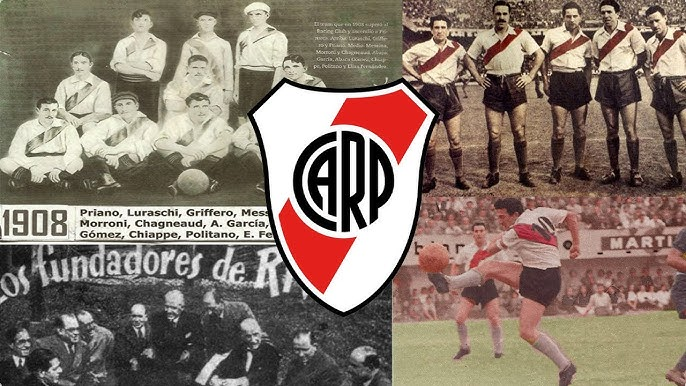

Jugadores Destacados de hoy (2025)
Historia de River Plate
Club Atlético River Plate fue fundado el 25 de mayo de 1901 en el barrio de La Boca, Buenos Aires. Desde sus inicios, River se destacó por su compromiso con el fútbol ofensivo y su identidad en el juego. El club se trasladó rápidamente al barrio de Núñez, donde construyó el emblemático Estadio Monumental, inaugurado en 1938, que se ha convertido en un símbolo del fútbol argentino y sudamericano.
A lo largo de más de un siglo de historia, River Plate ha cosechado numerosos campeonatos nacionales, siendo uno de los clubes más exitosos de Argentina con 38 títulos de liga. Internacionalmente, el club se consagró campeón de la Copa Libertadores en cuatro ocasiones (1986, 1996, 2015 y 2018), además de obtener la Copa Intercontinental en 1986, convirtiéndose en un referente del fútbol mundial.
River Plate también se caracteriza por haber formado a grandes figuras del fútbol, tanto nacionales como internacionales, y por su estilo de juego atractivo y ofensivo. La hinchada millonaria, conocida por su pasión y fidelidad, ha sido protagonista de memorables jornadas en el Monumental y en cada estadio del país.
Además de su historia futbolística, River Plate ha contribuido al desarrollo del deporte y la cultura en Argentina, siendo un club pionero en organización, infraestructura y formación de jóvenes talentos. Su legado perdura y continúa creciendo, consolidando a River Plate como un símbolo de excelencia, pasión y tradición en el fútbol argentino.
Galería

Logros
38
Campeonatos Nacionales
4
Copa Libertadores
1
Copa Intercontinental